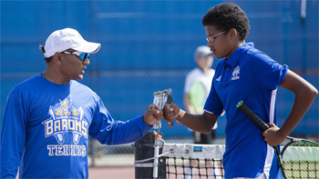
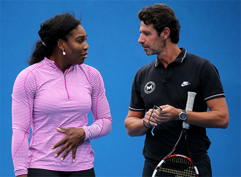
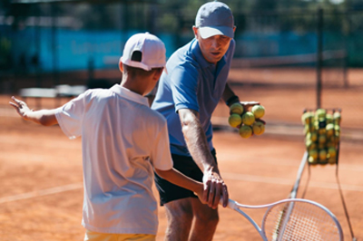
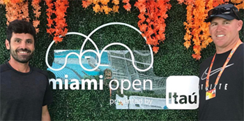
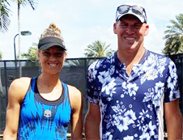

Previous: Learning to Win Through Practice Pressure | 🏠 Classic Lessons Home | Next: Maximizing Player and Coach Relationships - Part 2
Maximizing Player and Coach Relationships: Part 1
Comprehensive unified tennis knowledge base — Fundamentals, Stroke Analysis, Reference Library, and more
Maximizing Player and Coach Relationships: Part 1
Kyle LaCroix

A coach can be the most influential person in your life outside of your parents.
When looking back at the most influential people in your life outside of your parents, you are most likely going to remember a teacher or a coach. In school players typically spend more time with coaches than individual teachers.
The coach can be a primary caregiver. He or she can provide security, safety and emotional support.
The athlete/coach relationship is also a performance factor that can be more important than all other factors. When the athlete/coach relationship is maximized, athletes feel more comfortable pushing their boundaries, taking risks to improve performance, and giving 100% effort.
In 2019 my company SETS Consulting did a study in conjunction with Stanford University. We interviewed 98 male and female professional and collegiate athletes that had all played under championship coaches.
In the survey the athletes' answers were virtually unanimous across different sports and for both genders. The primary conclusion was that the most important factor in maximizing the athlete's performance was not what the coach did. It was how the coach did it.
Styles of Coaching
So what were the factors that went into that? Our research showed the most important factor in being a great coach is who the coach is as a person. And just as important, that the coach also understood who the athlete is as a person.
The worst coaching mistakes are not technical or tactical, they are mistakes in understanding, connection and in communication. In my work through SETS with high level pro players and their coaches, I have personally seen that improved understanding and communication can be a huge factor in competitive results.

The most important factors: who the player is and who the coach is as a person.
All tennis players, regardless of learning style, learn best when both the messenger and receiver are fully invested. There is a saying you can try to teach anyone, but you cannot necessarily make anyone learn.
There is a significant correlation between good coaching and the athlete participating in his/her own learning development. This means sharing decision making.
Collaboration between athlete and coach is what facilitates the knowledge exchange. It gives the player a chance to take an ownership role in his or her development and to truly understand the process by which this happens.
An example of collaboration: the coach can ask the player to devise new drills or exercises related to what they are working on. The player can also take the initiative in asking to do this. The creativity and thought process players need to do this will give them a deeper understanding of the work.
Another technique is to do role reversal. Have the player become the coach and teach a shot, strategy or pattern of play to the coach as if he were a player.
One of the best ways to learn is by teaching. If you as the player are a bit shy or intimidated by this, start small. Teach the coach a skill or trick that you have mastered outside of tennis: tying a bow tie, juggling, remembering the order of planets, or anything else.
I've learned so much from my students over the years when I put them in the driver's seat. Not only does this increase a player's confidence, they feel empowered. It decreases the dominance and intimidation level of the coach and increases the respect level from both parties.

The coach can ask the player to devise new drills and techniques—and vice versa.
Feedback
Another key in collaboration is feedback. But receiving and giving feedback is often where the relationship can be wounded.
Feedback is a gift. Both parties should expect and allow feedback. If done right, both athlete and coach will inevitably get better from it.
But feedback should be given with permission. Coaches and athletes must be open to it and be honest in providing feedback on each other's performance.
All feedback should be communicated with the intent to make the other person better. As a coach or a player, don't be afraid to provide your thoughts in a kind, respectful way.
Feedback should never be personal and should be non-judgmental. You are giving feedback on a task or performance, not the person's character or imperfections. Make sure feedback matches the goals that you are working towards and stays on point.
Great players and coaches are able to identify their mistakes or accomplishments and learn from them. They can track their progress and change their learning strategies. An open dialogue will help you improve your tennis and grow as a person.
As beneficial as feedback is, it does come with the understanding that you must know and understand your audience. Sometimes, what coaches say isn't as important as how they say it.
Real Life Example
One personal example is with a coach and player that I work with. The touring coach is a dear friend of mine and came from a strict system that did not sugar-coat things. He was very direct and brutally honest with his players.
The player was a bit shy and reserved. When they first began working together, he continued his normal ways. The player was taken aback and thought he was being too harsh.


I work individually with coaches and players and then share communication insights.
After working with them both and seeing how they interacted I knew immediately what the issue was. There was a lack of understanding from both parties on the type of feedback given.
The coach was too much--too direct and too strong for what the player was accustomed to. The player was too passive, too reserved and too quiet for what the coach was accustomed to. Once I got them to sit down and open up about themselves and their early tennis experiences, they began to discover more about each other and how they communicated.
The feedback became less aggressive from the coach, and more open, forthcoming and less personalized from the player. The player’s ranking when they started was comfortably outside the top 200 in 2018. As of early 2021 she was ranked inside the top 70.
When we open ourselves up for others to observe, gifts will be plentiful. Take them all and remember to say thank you. Stay tuned for Part 2!

Kyle LaCroix is a USPTA and PTR Certified Professional as well as receiving his United States Center For Coaching Excellence (USCCE) Certification. He has been a featured speaking at numerous Industry Conferences.
Kyle has experience working with ATP/WTA and NCAA collegiate players at each level of their competitive careers and at every stage of their professional and personal development. He is recognized throughout the industry as a reliable, hardworking, genuine presence. Kyle utilizes great people skills and is an exceptional communicator. He understands the important roles and responsibilities that federations, coaches and players carry with them on a daily basis.
He holds an MBA from the University of Michigan and a M.Ed in Educational Leadership from Stanford University
To find out more please visit setsconsult.org
Source: tennisplayer.net archive — Maximizing Player and Coach Relationships - Part 1.docx (John Yandell teaching library, 2002-2022). Extracted and rendered as HTML for Tennis Future Lab.